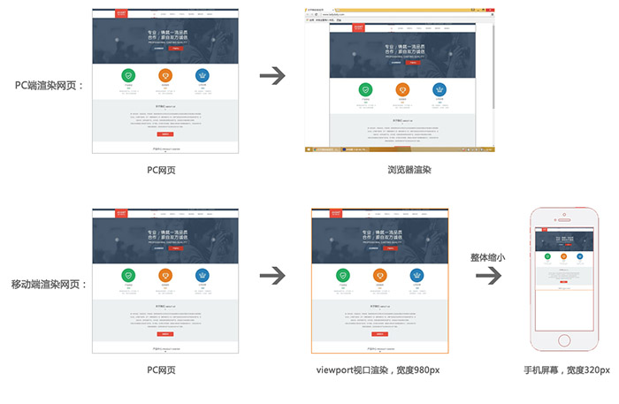
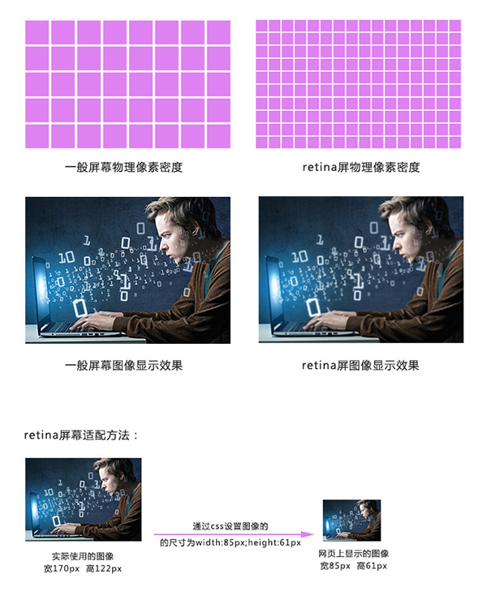

移动端与PC端页面布局区别
视口
视口是移动设备上用来显示网页的区域，一般会比移动设备可视区域大，宽度可能是980px或者1024px，目的是为了显示下整个为PC端设计的网页，这样带来的后果是移动端会出现横向滚动条，为了避免这种情况，移动端会将视口缩放到移动端窗口的大小。这样会让网页不容易观看，可以用 meta 标签，name=“viewport ” 来设置视口的大小，将视口的大小设置为和移动设备可视区一样的大小。
设置方法如下( 快捷方式：meta:vp + tab )：
<head>
......
<meta name="viewport" content="width=device-width, user-scalable=no,
initial-scale=1.0, maximum-scale=1.0, minimum-scale=1.0">
......
</head>
pc端与移动端渲染网页过程：

视网膜屏幕（retina屏幕）清晰度解决方案
视网膜屏幕指的是屏幕的物理像素密度更高的屏幕，物理像素可以理解为屏幕上的一个发光点，无数发光的点组成的屏幕，视网膜屏幕比一般屏幕的物理像素点更小，常见有2倍的视网膜屏幕和3倍的视网膜屏幕，2倍的视网膜屏幕，它的物理像素点大小是一般屏幕的1/4,3倍的视网膜屏幕，它的物理像素点大小是一般屏幕的1/9。
图像在视网膜屏幕上显示的大小和在一般屏幕上显示的大小一样，但是由于视网膜屏幕的物理像素点比一般的屏幕小，图像在上面好像是被放大了，图像会变得模糊，为了解决这个问题，可以使用比原来大一倍的图像，然后用css样式强制把图像的尺寸设为原来图像尺寸的大小，就可以解决模糊的问题。
清晰度解决过程示意图：

背景图强制改变大小，可以使用background新属性
background新属性
background-size:
- length：用长度值指定背景图像大小。不允许负值。
- percentage：用百分比指定背景图像大小。不允许负值。
- auto：背景图像的真实大小。
- cover：将背景图像等比缩放到完全覆盖容器，背景图像有可能超出容器。
- contain：将背景图像等比缩放到宽度或高度与容器的宽度或高度相等，背景图像始终被包含在容器内。